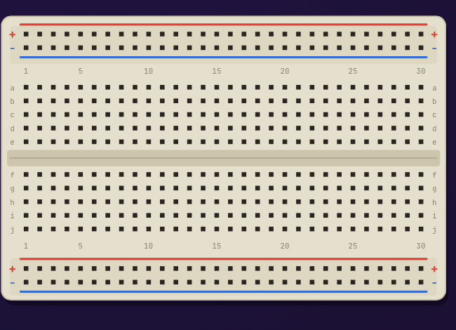
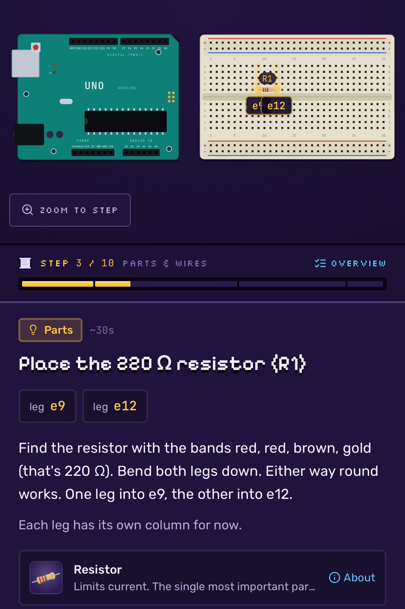
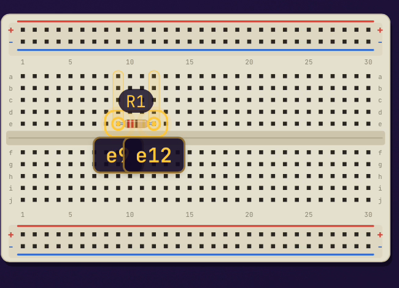

Breadboard basics · 3 minute read
Two holes can be
one connection.
A breadboard looks like a grid of separate holes. Under the plastic, groups of them are already joined. That hidden wiring explains a common mistake: a resistor can sit neatly on the board while a metal strip connects around it.
Follow these actual Circuit Quest screenshots to see why. You can read the connections without a kit or an app download.
Read the letter and number together.

Find 9 along the edge, then e just above the center groove. Their intersection is e9.
a9 · b9 · c9 · d9 · e9Five holes. One connected metal strip.Moving a leg from e9 to a9 changes its position but keeps it on that same electrical connection.
The center groove separates the halves. f9 through j9 form a different strip, so e9 and f9 are not joined through the board. The outer power rails are separate again; this five-hole rule describes the middle terminal area.
Trace a9 to e9 with your finger. You’re following one connection through five holes.
Give the resistor two connections.
The recorded guide calls for a 220 Ω resistor, with one leg in e9 and the other in e12. The two legs land on separate strips.

- Locate
e9and identify its five-hole group. - Locate
e12and identify that separate group. - Check that the resistor spans between them, with one leg in each group.
For this ordinary resistor, either end can go in either specified hole. The guide also states that either way round works. The important detail here is which connections its legs touch.
These coordinates belong to this example. They are not a universal resistor position, and this placement alone is not a complete powered circuit.
Try the two-hole question.
Quick check
Would a9 and e9 be a good replacement for e9 and e12?
Show the answer
No. a9 and e9 share the same strip. Put one resistor leg in each and the metal strip connects its ends together, bypassing the resistor. The part still looks installed, but the circuit’s connections have changed.

Before adding another wire, ask: “Which metal strip does each leg actually touch?”